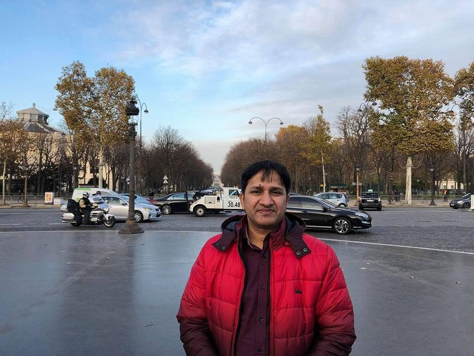

Biography of Dr. Md. Moniruzzaman
I obtained my Bachelor and Master’s Degrees in Geography and Environment from the Jahangirnagar University, Bangladesh. I did a Post Graduate Advance Course in Climate Change-Mitigation and Adaptation from Swedish Meteorological and Hydrological Institute (SMHI), Norkoping, Sweden and Funded by Sida. I did my PhD on Geospatial Analysis of Damage, Loss, Recovery and Reconstruction: A Case on Cyclone Sidr, at the Department of Geography and Environment, Jahangirnagar University, Savar, Dhaka, Bangladesh. My research interests include disaster management, climate change-mitigation and adaptation, post cyclone recovery, coastal water supply system, urban management, water quality and pollution studies, field studies, environmental changes, and spatial and attribute data analysis using GIS/RS and statistical software. I am the founder teacher of the Department of Geogrphy and Environment, Jagannath University and founder head of the Climate and Disaster Study Unit (CDSU) of the deptartment.
Member and Current Positions of Professional Organization
Life member
- Bangladesh National Geographical Association (BNGA)
- Bangladesh Geographical Society (BGS)
- Bangladesh Association of Advance Science (BAAS)
- Bangladesh Paribesh Andolon (BAPA)
Current Position
- Joint Secretary, Bangladesh National Geographical Association (BNGA)
- Councillor Executive Committee, Bangladesh Geographical Society (BGS)
Board Member
- Environment and Population Research Centre (EPRC)
Member (Editorial Board)
- BNGA Journal (Vol.35-36, 2007-2009)
- JnU Journal of Science (Vol.1-2), 2011- 2012
- Jagannath University Barta (2009-2010)
Expert Member
- Tertiary level curriculum development of disaster management, CDMP, GoB
- BBS Strengthening Project, GoB
- Member, Syllabus Committee, National University, BD